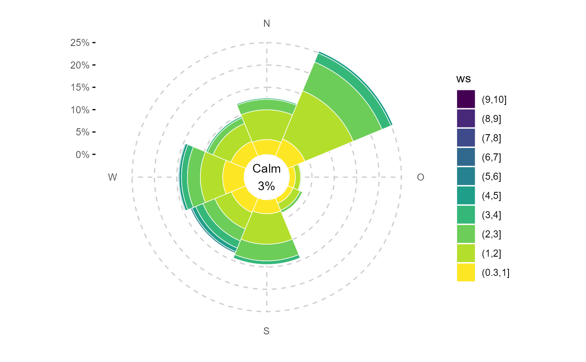

ggplot wrapper to create a windrose with calm support (polar wind-bin frequency plot)
Source:R/ggwindrose.R
ggwindrose2.Rdggplot wrapper to create a windrose with calm support (polar wind-bin frequency plot)
ggwindrose2(
data,
ws,
wd,
wd_binwidth = 45,
ws_binwidth = 1,
ws_max = NA,
groupings = grp(),
nmin = 1,
fill_scale = scale_fill_viridis_d(),
reverse = TRUE,
bg = NULL,
calm = NA,
calm.prefix = "Calm\n",
calm.accuracy = 1,
calm.color = "black",
calm.size = 3.88,
yexpand = 0.2,
...
)Arguments
- data
tibble containing wind speed, wind direction and/or air pollutant concentration data
- ws
symbol giving the wind velocity column name (wind velocity preferably in m/s)
- wd
symbol giving the wind direction column name in degrees
- wd_binwidth
numeric, binwidth for wind direction in °, wd_binwidth should fullfill:
(360 / wd_binwidth) %in% c(4, 8, 16, 32)- ws_binwidth
numeric, binwidth for wind speed
- ws_max
numeric, can be NA, wind speed is squished at this value
- groupings
additional groupings. Use helper
grp()to create. Necessary for some facets!- nmin
numeric, minimum number of values for fun, if n < nmin: NA is returned
- fill_scale
ggplot2 discrete fill scale, e.g.
ggplot2::scale_fill_gradientn()- reverse
TRUE/FALSE, should wind speed bin factors be sorted descending (TRUE) or ascending (FALSE). Usually for wind roses a descending order (higher wind speed on the outside) is used.
- bg
raster map, e.g. ggmap object as plot background
- calm
if specified as numeric value all windspeed below this value will be treated as calm and the proportion will be displayed as text in the center. The color, size of the text can be supplied with
calm.sizeandcalm.color. A prefix for the text can be defined withcalm.prefixand the accuracy of the number withcalm.accuracy- calm.prefix
prefix for the calm text as string. Supplied to
scales::label_percent()as argument.- calm.accuracy
A number to round to. Use (e.g.) 0.01 to show 2 decimal places of precision. If NULL uses a heuristic that should ensure breaks have the minimum number of digits needed to show the difference between adjacent values.
- calm.color
text color
- calm.size
text size
- yexpand
size of the empty calm circle in the center as percentage of the y scale
- ...
Other arguments passed on to
ggplot2::geom_bar(). Used to set an aesthetic to a fixed value. Defaults arecolor = "white", width = 1, size = 0.25
Value
ggplot2::ggplot() object
Examples
library(ggplot2)
fn <- rOstluft.data::f("Zch_Stampfenbachstrasse_2010-2014.csv")
data <-
rOstluft::read_airmo_csv(fn) %>%
rOstluft::rolf_to_openair()
ggwindrose2(data, ws, wd, calm = 0.3)

# squish ws
ggwindrose2(data, ws, wd, ws_max = 5, calm = 0.3)
#' # a map as background
bb <- bbox_lv95(2683141, 1249040, 500)
#> Warning: Discarded datum CH1903+ in Proj4 definition
bg <- get_stamen_map(bb)
ggwindrose2(data, ws, wd, ws_max = 5, calm = 0.5, alpha = 0.8, bg = bg) +
theme(
panel.grid.major = element_line(linetype = 2, color = "black", size = 0.5)
)
 # another fill scale
ggwindrose2(data, ws, wd, ws_max = 5,
fill_scale = scale_fill_manual(values = matlab::jet.colors(6)))
# another fill scale
ggwindrose2(data, ws, wd, ws_max = 5,
fill_scale = scale_fill_manual(values = matlab::jet.colors(6)))
 # reverse the coloring of the fill
ggwindrose2(data, ws, wd, ws_max = 4,
fill_scale = scale_fill_viridis_d(direction = -1))
# reverse the order of ws, but keep the coloring and legend order
ggwindrose2(data, ws, wd, ws_max = 4, reverse = FALSE,
fill_scale = scale_fill_viridis_d(direction = -1))
# reverse the coloring of the fill
ggwindrose2(data, ws, wd, ws_max = 4,
fill_scale = scale_fill_viridis_d(direction = -1))
# reverse the order of ws, but keep the coloring and legend order
ggwindrose2(data, ws, wd, ws_max = 4, reverse = FALSE,
fill_scale = scale_fill_viridis_d(direction = -1))